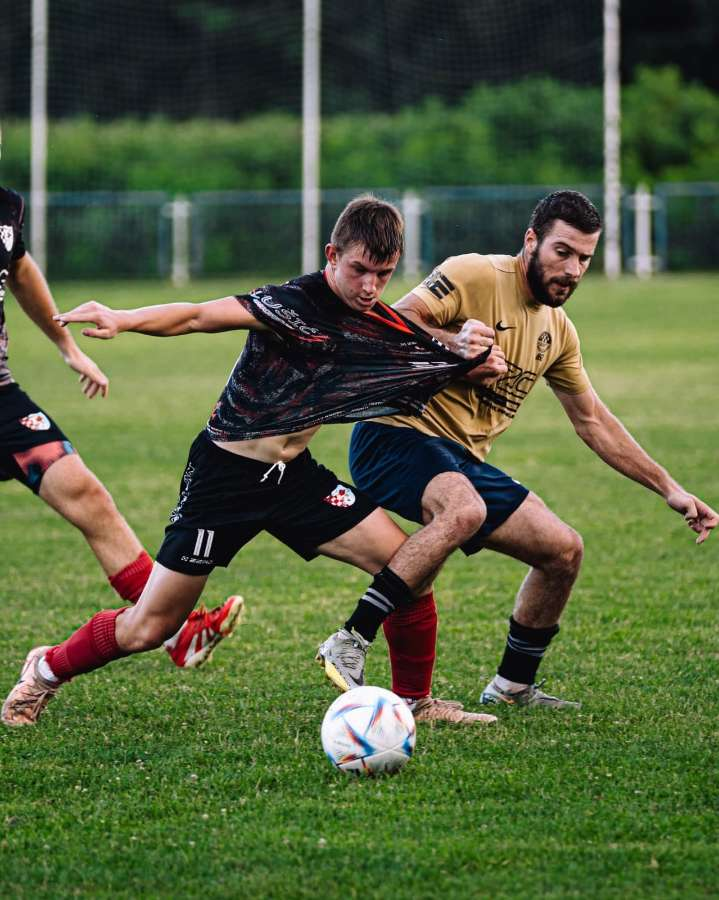
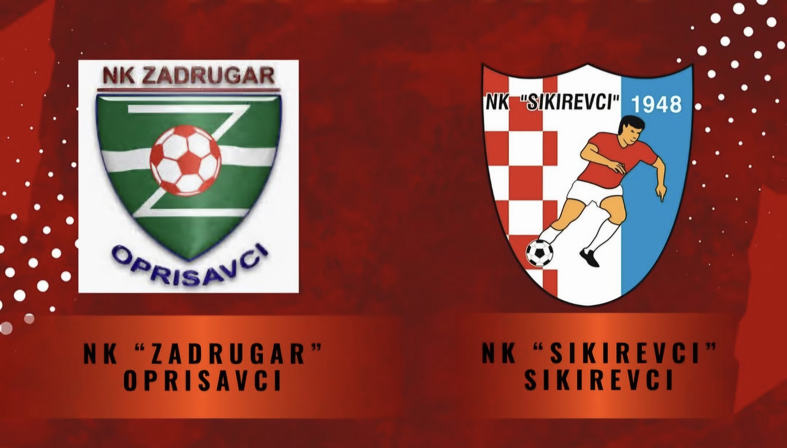

Nogometni klub Sikirevci
Web stranica NK Sikirevaca za pregled vijesti, rezultata, rasporeda utakmica, igrača i povijesti kluba.
ISTAKNUTI IGRAČ

Pozicija: Desno krilo
Jača noga: Lijeva
Rođen: Slavonski Brod
Datum rođenja: 3.8.2008.
Young Star ⭐
ISTAKNUT DERBI
